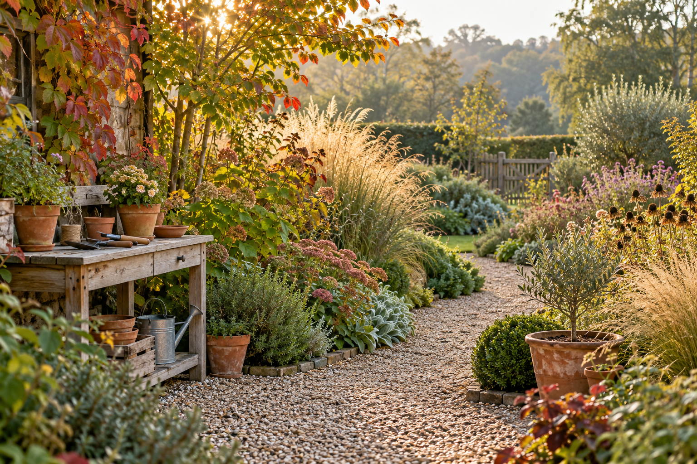

Tidy & care
Garden Waste Bag
A reusable bag for gathering leaves and light garden cuttings as you work.
£9.99planned price
A few pots. A corner worth keeping. A garden that feels more like you. Find practical ideas, plan your next small job or talk to us about a bigger change.

Start with the job you want to do. Our planned range brings together simple tools, potting extras and plant supports.
A reusable bag for gathering leaves and light garden cuttings as you work.
Fifty labels with a pencil for keeping track of what you have planted.
An everyday hand tool for potting and suitable small planting jobs.
Gather leaves and tackle a small patch of paving, one manageable job at a time.
Explore this collection →A trowel, labels and a few pots: a simple starting point for your next planting project.
Explore this collection →Combine suitable supports and gentle ties. Check the final sizes against your plants.
Explore this collection →You do not need a perfect plan to begin. Describe what would make your garden easier to use or more enjoyable, and we can discuss whether we can help.
Start with the paths you use, the lawn beneath your feet and a little space for wildlife.
Read the note →A doorstep, patio or balcony can become a growing space. Start with the conditions you have.
Read the note →A wildlife-friendly corner begins with thoughtful care, rather than a shopping list.
Read the note →